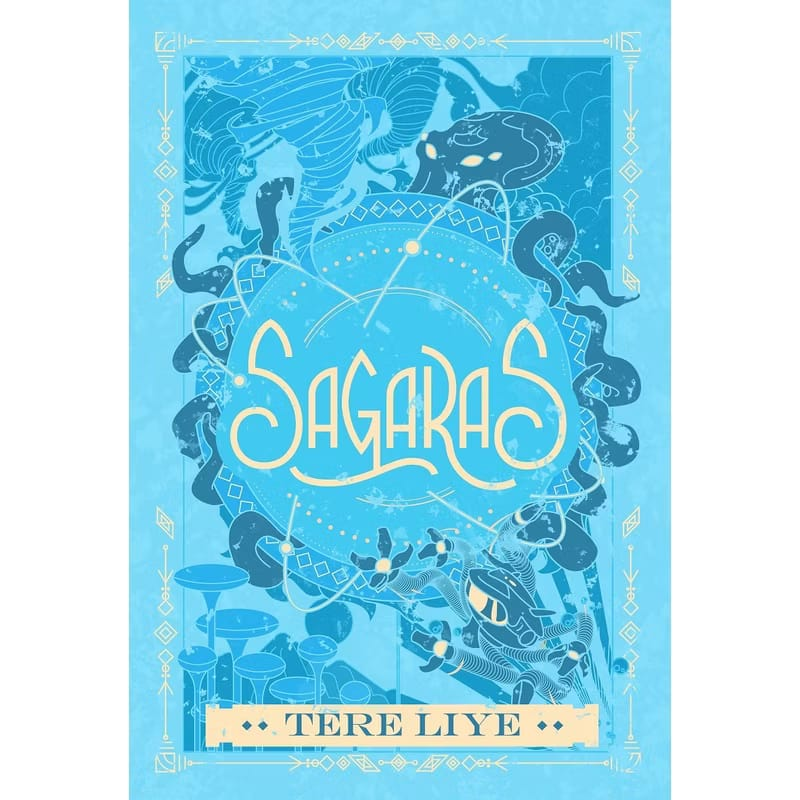

E-BOOK
Trending
Sagaras
14 Nov 2024
Di sebuah dunia yang luas dan penuh misteri, tiga sahabat—Ali, Raib, dan Seli—memulai petualangan baru yang membawa mereka ke tempat yang belum pernah mereka bayangkan sebelumnya. Petunjuk dari masa lalu membawa Ali ke Klan SagaraS, tempat di mana rahasia besar tentang orang tuanya tersembunyi.
Ali berangkat tanpa memberi tahu Raib dan Seli. Namun, kekhawatiran mereka membuat mereka mengejar Ali, didampingi oleh Master Batozar. Perjalanan berbahaya melewati lautan luas membawa mereka ke gerbang tersembunyi menuju Klan SagaraS.
Setibanya di sana, mereka disambut dengan perlawanan dari 13 ksatria penjaga klan. Pertarungan sengit terjadi, menguji batas kekuatan dan strategi mereka. Raib menggunakan kekuatan menghilangnya untuk mengecoh lawan, Seli dengan petirnya menahan serangan dari beberapa ksatria, sementara Ali menggunakan kecerdasannya untuk menemukan celah dalam pertahanan musuh. Dengan kerja sama yang solid, mereka akhirnya diizinkan masuk.
Di dalam Klan SagaraS, Ali menemukan kenyataan pahit tentang orang tuanya. Mereka bukan sekadar hilang, tetapi terlibat dalam sebuah konflik besar yang mengubah sejarah klan tersebut. Seorang tetua klan, yang mengenali Ali, mengungkapkan bahwa orang tuanya dulu adalah ilmuwan yang bekerja di bawah pengawasan penguasa Klan SagaraS, mencari cara untuk menstabilkan energi besar yang tersimpan di lautan.
Namun, penelitian tersebut mengarah pada bencana. Sebuah eksperimen yang gagal menyebabkan kehancuran besar, membuat orang tua Ali dianggap sebagai pengkhianat dan hilang secara misterius. Ali semakin yakin bahwa ada sesuatu yang disembunyikan dari sejarah resmi klan tersebut.
Sementara itu, ancaman lain muncul. Seorang penguasa kuat, yang dikenal sebagai Panglima Laut Hitam, ingin merebut kekuatan SagaraS untuk dirinya sendiri. Ia mengirimkan pasukan lautnya untuk menyerang klan, berharap bisa menguasai teknologi dan energi yang terkandung di wilayah tersebut.
Dalam pertarungan terakhir yang menegangkan, Ali, Raib, dan Seli harus bersatu untuk melindungi masa depan Klan SagaraS. Dengan strategi yang matang, mereka berhasil mengalahkan pasukan Panglima Laut Hitam. Pada saat genting, Ali menemukan sebuah perangkat peninggalan orang tuanya yang dapat menyeimbangkan energi di lautan dan mencegah kehancuran lebih lanjut.
Dengan keberhasilan mereka, Ali mendapatkan penghormatan dari Klan SagaraS, serta lebih banyak petunjuk tentang keberadaan orang tuanya. Meskipun misteri belum sepenuhnya terpecahkan, Ali dan teman-temannya menyadari bahwa perjalanan mereka masih panjang. Mereka meninggalkan Klan SagaraS dengan tekad yang lebih kuat untuk mengungkap seluruh kebenaran.
Petualangan mereka di Klan SagaraS membuka lembaran baru, bukan hanya bagi Ali tetapi juga bagi dunia yang lebih luas. Dengan keberanian dan persahabatan, mereka bersiap menghadapi tantangan berikutnya.